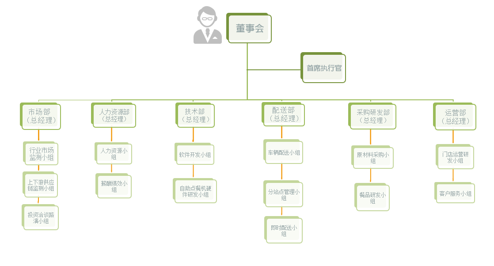

关于猫范
猫范CEO 洪礼杭
MorningFun（猫范），是福建首家付费会员制早餐品牌，主要面向都市白领圈层，主打“12小时”新鲜早餐理念。
猫范创始团队，是一群热爱生活的年轻人，来自媒体、餐饮、广告等各行业，因美食和旅游结缘。2016年初在福州筹备建立，旗下拥有猫范产品研发实验室、小猫快送物流、猫范线下体验中心（筹建）等，每天只专注一款西式全营养套餐，坚持清晨手作，每天不重样。
所以，猫范团队坚持：从精选食材到会员食用，必须在21:30——9:30之间完成。
这意味着，每天晚上20:00猫范早餐预定截止后，“12小时”早餐的倒计时才算开始：
食物精选（21:30--22:00）
凌晨手作（0:00--06:00）
新鲜配送（07:00--9:30）
会员食用（7:00--）
全程控制在12小时内，只为保证极致新鲜的口感。
认真严谨又不失情趣的生活态度，孕育了MorningFun独特的产品基因，以猫范早餐为切入口，还将延伸MorningMall、MorningNews、MorningSevice、MorningShare、MorningClass五大主题模块，追求极致新鲜，专注早晨经济，共享快乐生活！ MorningFun认为，美食的鲜度，首先取决于它的制作周期。
品牌架构
猫范决策层由创始团队构成，日常运营负责人为首席执行官，下设市场部，人力资源部，技术部，配送部，采购研发部，运营部，各个部门下设各个职能小组，并进行细致化运作。但同时，为了提高市场的适应能力，猫范的架构也将随着市场的变化和年度任务目标的变化而做出相应的调整。
